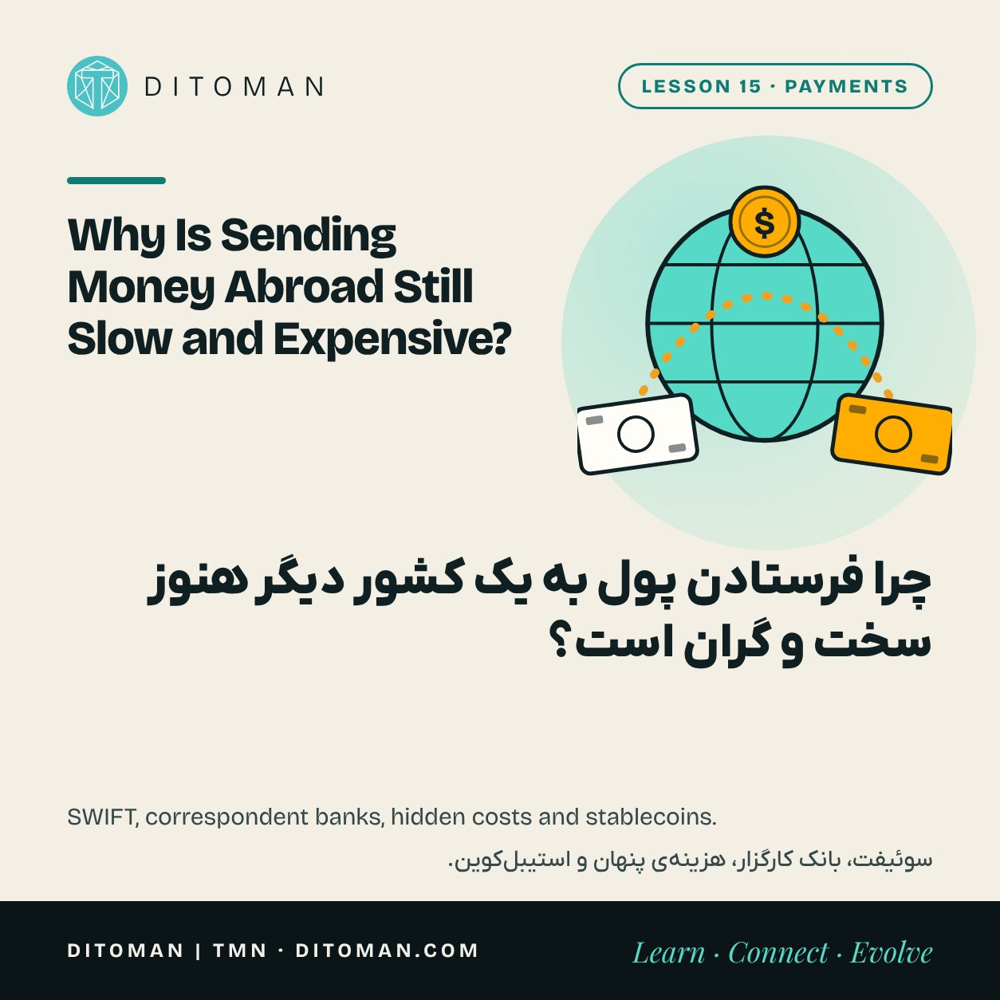

为什么跨境汇款仍然又慢又贵？
چرا فرستادن پول به یک کشور دیگر هنوز سخت و گران است؟
一条消息一秒钟就能传遍世界，而钱却可能要花几天，并在途中损失几个百分点。本课展示两个国家的两家银行之间发生了什么、成本藏在哪里，以及稳定币改变了什么、没改变什么。
یک پیام در یک ثانیه به آن سر دنیا میرسد، ولی پول ممکن است چند روز در راه باشد و چند درصدش هم کم شود. این درس نشان میدهد میان دو بانک در دو کشور چه میگذرد، هزینه کجا پنهان است و استیبلکوینها چه چیزی را عوض میکنند و چه چیزی را نه.
课程内容
محتوای درس
可用英文或波斯文阅读本课。
درس را به فارسی یا انگلیسی بخوانید.
一位在国外的工人给家里寄200美元。一名学生需要向另一个国家的大学缴费。一家小企业向海外供应商付款。三者面对同样的意外：转账要花几天，而且有一部分钱明显在途中消失了。
在一个国家内部，第14课展示了一个连接每家银行的单一网络。在国家之间，不存在这样的网络。这一个事实几乎解释了本课的一切。
01. 钱不会旅行
首先要知道的是，钱实际上并不会跨越边境。跨越边境的是一条消息，然后银行各自调整账簿。
如果一个国家的 A 银行想向另一个国家的 B 银行付款，两者需要一个双方都有账户的地方。通常这是一家大型国际银行，称为 代理行。A 银行在那里的账户减少，B 银行的增加，支付就完成了。
当两家银行没有共同的代理行时，支付要连续经过两三家银行。每一跳都增加时间、费用和合规检查。
02. SWIFT 是什么，不是什么
SWIFT 是一个安全的消息网络，200多个国家的11,000多家金融机构用它来互相发送支付指令。它成立于1973年。
SWIFT 传递的是指令。它不持有也不移动资金。资金通过上述代理账户移动。这也是为什么被切断 SWIFT 对一个国家的银行如此重要：没有这些消息，常规渠道就被关闭了。
- 1汇款人向其银行付款 以本地货币。
- 2银行兑换货币 按自己的汇率，并发送指令，通常通过 SWIFT。
- 3代理行 在两家银行的账户之间转移余额。可能不止一家。
- 4每家银行进行检查 并可能扣除费用。
- 5收款人的银行入账，几小时或几天之后。
03. 成本藏在哪里
世界银行追踪在各国之间汇款200美元的成本。2025年初，全球平均约为6.5%，是联合国3%目标的两倍多。银行是最贵的渠道，数字服务最便宜。
这笔成本有三个部分。
标明的手续费： 你在汇款时看到的收费。
汇率差价： 服务商按比市场汇率更差的汇率兑换，并留下差额。这往往是更大的部分，而且不会出现在任何小票上。
途中费用： 中间银行可能各自扣除一笔费用，所以到账的比汇出的少。
比较服务商时，忽略广告里的手续费，只问一个问题：如果我付这个金额，对方币种到底能收到多少？
04. 为什么慢
处于不同时区的银行营业时间不同，许多支付系统在夜间和周末关闭。路线上的每家银行还必须按反洗钱和制裁规则检查这笔支付。一个不清楚的细节就可能把支付卡住几天。
05. 古老的非正式渠道
早在银行出现之前，商人就使用信任网络。汇款人把钱交给一个城市的经纪人，经纪人在另一个城市的伙伴把钱付给收款人。两位经纪人之后再彼此结算。在许多国家这被称为哈瓦拉（hawala），在银行缓慢、昂贵或不可用的地方，它至今仍在转移大额资金。
它可以又快又便宜。但它也完全依赖经纪人的诚信，而且在许多地方处于法律保护之外。
06. 稳定币改变了什么
美元稳定币可以在几分钟内、在任何时间、只需少量网络费用就在两个钱包之间转移。这一步不涉及代理行。这是稳定币越来越多地用于跨境支付的主要原因。
但困难的部分转移到了两端。汇款人必须先把本地货币换成代币，收款人必须再把它换回来，通常要通过交易所或经纪人，他们有自己的费用、汇率和规则。而且代币带来了第11课中的风险：发行方、储备以及退出的方式。
所以稳定币可以缩短旅程的中间段。它并不会去掉第一步和最后一步。
本课要点
钱不会跨越边境。消息会，而银行调整彼此持有的账户。
SWIFT 传递指令。代理行移动余额。
真正的成本是手续费加汇率差价。问问最终到账多少。
延迟来自时区、关闭的系统和合规检查。
稳定币加快了路线的中间段。进出环节仍然是成本和风险所在。
کارگری در خارج ۲۰۰ دلار برای خانوادهاش میفرستد. دانشجویی باید شهریهی دانشگاهی را در کشوری دیگر بپردازد. یک کسبوکار کوچک به تأمینکنندهای آن طرف دنیا پول میدهد. هر سه با یک چیز روبهرو میشوند: انتقال چند روز طول میکشد و بخشی از پول در راه کم میشود.
درس ۱۴ نشان داد داخل یک کشور، یک شبکه همهی بانکها را به هم وصل میکند. میان کشورها چنین شبکهای وجود ندارد. تقریباً همهی این درس از همین یک واقعیت میآید.
۰۱. پول سفر نمیکند
اولین نکته این است که پول واقعاً از مرز رد نمیشود. چیزی که رد میشود یک پیام است و بعد بانکها دفترهایشان را اصلاح میکنند.
اگر بانک «الف» در یک کشور بخواهد به بانک «ب» در کشوری دیگر پول بدهد، هر دو به جایی نیاز دارند که در آن حساب داشته باشند. اینجا معمولاً یک بانک بزرگ بینالمللی است که به آن بانک کارگزار میگویند. حساب بانک «الف» نزد او کم میشود، حساب بانک «ب» زیاد میشود و پرداخت انجام شده است.
وقتی دو بانک کارگزار مشترکی ندارند، پرداخت از دو یا سه بانک پشت سر هم میگذرد. هر ایستگاه زمان، کارمزد و یک بررسی قانونی اضافه میکند.
۰۲. سوئیفت چه هست و چه نیست
سوئیفت یک شبکهی پیامرسان امن است که بیش از ۱۱ هزار مؤسسهی مالی در بیش از ۲۰۰ کشور، دستور پرداخت را با آن برای هم میفرستند. این شبکه در سال ۱۹۷۳ تأسیس شد.
سوئیفت دستور را میبرد. پول را نگه نمیدارد و جابهجا هم نمیکند. پول از راه همان حسابهای کارگزاری که گفتیم جابهجا میشود. برای همین قطع شدن از سوئیفت برای بانکهای یک کشور اینقدر مهم است: بدون پیام، مسیر معمول بسته میشود.
- ۱فرستنده به پول محلی به بانک خودش پرداخت میکند.
- ۲بانک ارز را با نرخ خودش تبدیل میکند و دستور پرداخت را، اغلب از راه سوئیفت، میفرستد.
- ۳بانک کارگزار موجودی را میان حساب دو بانک جابهجا میکند. ممکن است بیش از یک بانک در راه باشد.
- ۴هر بانک بررسیهای خودش را انجام میدهد و ممکن است کارمزدی کم کند.
- ۵بانک گیرنده چند ساعت یا چند روز بعد پول را به حساب مینشاند.
۰۳. هزینه کجا پنهان است
بانک جهانی هزینهی فرستادن ۲۰۰ دلار میان کشورها را دنبال میکند. در اوایل ۲۰۲۵ میانگین جهانی حدود ۶٫۵ درصد بود؛ بیش از دو برابر هدف ۳ درصدی سازمان ملل. بانکها گرانترین راه بودند و سرویسهای دیجیتال ارزانترین.
این هزینه سه بخش دارد.
کارمزد اعلامشده: مبلغی که موقع ارسال میبینیم.
فاصلهی نرخ تبدیل: فرستندهی پول ارز را با نرخی بدتر از نرخ بازار تبدیل میکند و تفاوت را برمیدارد. این بخش اغلب بزرگتر است و روی هیچ رسیدی نمیآید.
کارمزدهای میان راه: هر بانک واسطه ممکن است مبلغی کم کند و در نتیجه کمتر از مبلغ فرستادهشده به مقصد برسد.
برای مقایسه، کارمزد تبلیغشده را کنار بگذارید و فقط یک چیز بپرسید: اگر این مبلغ را بدهم، دقیقاً چقدر به پول مقصد به دست گیرنده میرسد؟
۰۴. چرا کند است
بانکها در منطقههای زمانی مختلف در ساعتهای متفاوتی بازند و بسیاری از سامانههای پرداخت شبها و آخر هفته بستهاند. هر بانکِ مسیر هم باید پرداخت را با قواعد پولشویی و تحریم بسنجد. یک جزئیات نامشخص میتواند پرداخت را چند روز نگه دارد.
۰۵. راه قدیمی و غیررسمی
خیلی پیش از بانکها، بازرگانان از شبکههای اعتماد استفاده میکردند. فرستنده در یک شهر به یک صراف پول میدهد و همکار آن صراف در شهری دیگر به گیرنده میپردازد. دو صراف بعداً میان خودشان حساب را صاف میکنند. این همان «حواله» است و هنوز هر جا بانک کند، گران یا در دسترس نباشد، مبلغهای بزرگی را جابهجا میکند.
میتواند سریع و ارزان باشد. در عوض کاملاً به درستکاری صراف بستگی دارد و در بسیاری جاها بیرون از حمایت قانونی است.
۰۶. استیبلکوین چه چیزی را عوض میکند
یک استیبلکوین دلاری میتواند در چند دقیقه، در هر ساعتی و با کارمزد شبکهی اندک، میان دو کیف پول جابهجا شود. در این مرحله بانک کارگزاری در کار نیست. دلیل اصلی اینکه استیبلکوینها روزبهروز بیشتر در پرداخت بینالمللی به کار میروند همین است.
ولی بخشهای سخت به دو سرِ مسیر منتقل میشود. فرستنده اول باید پول محلی را به توکن تبدیل کند و گیرنده باید آن را دوباره به پول تبدیل کند؛ معمولاً از راه صرافی یا واسطهای که کارمزد، نرخ و قواعد خودش را دارد. توکن هم ریسکهای درس ۱۱ را با خودش میآورد: ناشر، پشتوانه و راه خروج.
پس استیبلکوین میتواند میانهی سفر را کوتاه کند. قدم اول و آخر را حذف نمیکند.
چه برداشتی کنیم
پول از مرز رد نمیشود. پیام رد میشود و بانکها حسابهایی را که نزد هم دارند اصلاح میکنند.
سوئیفت دستور را میبرد. بانکهای کارگزار موجودی را جابهجا میکنند.
هزینهی واقعی، کارمزد بهاضافهی فاصلهی نرخ تبدیل است. بپرسید چقدر به مقصد میرسد.
تأخیر از تفاوت ساعت، سامانههای بسته و بررسیهای قانونی میآید.
استیبلکوین میانهی مسیر را سریع میکند. هزینه و ریسک هنوز در ورود و خروج است.
详细了解加密路线
مسیر کریپتویی را با جزئیات ببینید
第16课以同样的方式跟随一笔加密转账：地址、网络、费用和确认。第11课解释这些支付所用稳定币背后有什么支撑。
درس ۱۶ یک انتقال کریپتویی را به همین شکل دنبال میکند: آدرس، شبکه، کارمزد و تأیید. درس ۱۱ توضیح میدهد پشت استیبلکوینهایی که در این پرداختها به کار میروند چه چیزی هست.
核心概念
مفاهیم کلیدی
- 跨境支付
- 代理行
- SWIFT
- 汇款
- 汇率差价
- 中间费用
- 合规检查
- 哈瓦拉
- 入金与出金通道
- پرداخت بینالمللی
- بانک کارگزار
- سوئیفت
- حوالهی کارگران مهاجر
- فاصلهی نرخ تبدیل
- کارمزد بانکهای واسطه
- بررسیهای قانونی
- حواله
- ورود و خروج از کریپتو
学习目标
اهداف یادگیری
- 解释为什么钱本身不会跨越边境。
- 描述代理行的作用。
- 说明 SWIFT 做什么，不做什么。
- 找出国际转账成本的三个部分。
- 解释稳定币缩短了旅程的哪一部分，哪些部分依然存在。
- توضیح دهید چرا خودِ پول از مرز رد نمیشود.
- بگویید بانک کارگزار چه کاری میکند.
- بگویید سوئیفت چه کاری میکند و چه کاری نمیکند.
- سه بخش هزینهی یک انتقال بینالمللی را پیدا کنید.
- توضیح دهید استیبلکوین کدام بخش مسیر را کوتاه میکند و کدام بخشها سر جایشان میمانند.
测验
آزمونک
检查一下你记住了什么。答案在每道题下面。
ببین چه چیزی در ذهنت مانده. پاسخ زیر هر پرسش آمده است.
第1题
پرسش ۱
SWIFT 做什么？
سوئیفت چه کاری میکند؟
A. 持有银行的资金
الف. پول بانکها را نگه میدارد
B. 在机构之间传递支付指令
ب. دستور پرداخت را میان مؤسسهها میبرد
C. 设定汇率
ج. نرخ ارز را تعیین میکند
正确答案：B
پاسخ درست: ب
第2题
پرسش ۲
转账的成本最常藏在哪里？
هزینهی یک انتقال بیشتر کجا پنهان میشود؟
A. 汇率差价里
الف. در فاصلهی نرخ تبدیل
B. 小票纸上
ب. در کاغذ رسید
C. 收款人的手机账单里
ج. در قبض تلفن گیرنده
正确答案：A
پاسخ درست: الف
第3题
پرسش ۳
什么是代理行？
بانک کارگزار چیست؟
A. 印制外币的银行
الف. بانکی که ارز خارجی چاپ میکند
B. 另外两家银行都在其开户的银行
ب. بانکی که دو بانک دیگر هر دو در آن حساب دارند
C. 批准转账的政府部门
ج. ادارهای دولتی که انتقال را تأیید میکند
正确答案：B
پاسخ درست: ب
第4题
پرسش ۴
比较汇款服务时，最好的一个问题是什么？
بهترین پرسش برای مقایسهی سرویسهای انتقال پول کدام است؟
A. 广告里的手续费是多少？
الف. کارمزد تبلیغشده چقدر است؟
B. 它有多少家网点？
ب. چند شعبه دارد؟
C. 对方币种到底能收到多少？
ج. دقیقاً چقدر به پول مقصد میرسد؟
正确答案：C
پاسخ درست: ج
第5题
پرسش ۵
稳定币不能去掉国际支付的哪一部分？
استیبلکوین کدام بخش پرداخت بینالمللی را حذف نمیکند؟
A. 把本地货币换成代币再换回来
الف. تبدیل پول محلی به توکن و برگرداندن آن
B. 中间环节的代理行
ب. بانک کارگزار در مرحلهی میانی
C. 周末休息时间
ج. تعطیلی آخر هفته
正确答案：A
پاسخ درست: الف
来源
منابع
平均成本来自世界银行《全球汇款价格》报告的2025年第一季度。后续季度可能有所不同。
میانگین هزینه از گزارش «قیمت حواله در جهان» بانک جهانی برای فصل اول ۲۰۲۵ است. فصلهای بعد ممکن است فرق کند.
با هم دنبال میکنیم关注我们
新课程会首先在 Ditoman 的各个渠道发布。
درسهای تازه اول در کانالهای دیتومان معرفی میشوند.